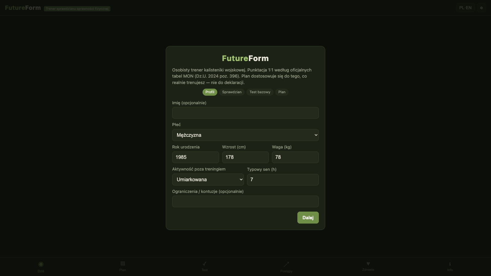

FutureForm. FutureForm.
A military-calisthenics coach in your phone — training for the Polish MoD fitness test, with the official score tables built in 1:1. Pull-ups, push-ups, shuttle runs, sit-ups, marches: FutureForm builds a progression towards a target score, converts results into grades (age and sex) and shows how far you are from the next one. Installs from the browser (PWA), works fully offline, needs no account. Trener kalisteniki wojskowej w telefonie — przygotowanie do sprawdzianu sprawności fizycznej MON, z normami 1:1 z rozporządzenia (Dz.U. 2024 poz. 396). Podciągnięcia, uginania ramion, bieg wahadłowy, brzuszki, marszobieg: FutureForm prowadzi progresję pod konkretny wynik, przelicza rezultaty na oceny (wiek i płeć) i pokazuje, ile brakuje do następnej. Instaluje się z przeglądarki (PWA), działa w pełni offline, nie wymaga konta.
- Official MoD test tables, 1:1Normy sprawdzianu MON 1:1
- Score → grade convertersPrzeliczniki wynik → ocena
- Progression plans + training logPlany progresji + dziennik treningów
- PWA: full offlinePWA: pełny offline
- No account, no trackingBez konta, bez trackingu